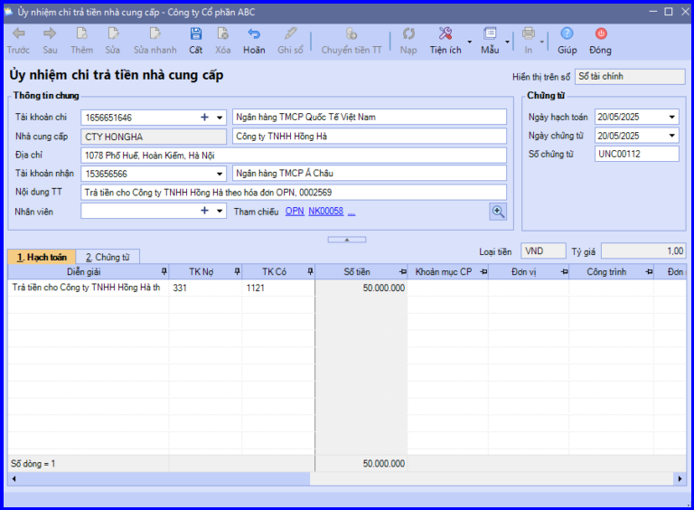
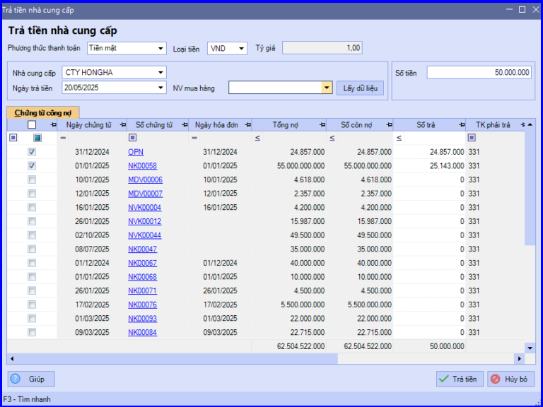
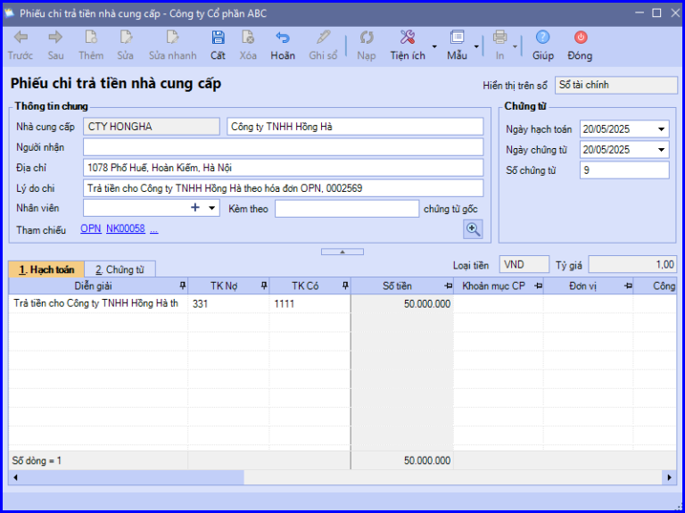

Hướng dẫn cách hạch toán ghi sổ nghiệp vụ trả nợ tiền mua hàng hóa dịch vụ cho người bán, cho nhà cung cấp bằng tiền mặt hoặc tiền gửi ngân hàng trên phần mềm Misa
1. Trả nợ tiền mua hàng hóa dịch vụ cho người bán, cho nhà cung cấp bằng tiền gửi ngân hàng
Khi công ty chuyển trả nợ cho nhà cung cấp thông qua tài khoản ngân hàng, thường phát sinh các hoạt động sau:
- Căn cứ vào yêu cầu của nhân viên đi mua hàng, cấp trên hoặc do nhà cung cấp đến đòi nợ, kế toán thanh toán sẽ lập Ủy nhiệm chi.
- Chuyển Ủy nhiệm chi cho Kế toán trưởng và Giám đốc ký duyệt.
- Ngân hàng căn cứ vào Ủy nhiệm chi của công ty sẽ chuyển tiền vào tài khoản của nhà cung cấp, đồng thời lập giấy báo Nợ.
- Căn cứ vào giấy báo Nợ của ngân hàng, kế toán thanh toán sẽ hạch toán, đồng thời ghi sổ tiền gửi ngân hàng.
=> Nếu công ty trả tiền trong thời hạn được hưởng chiết khấu thanh toán, thì sẽ chỉ phải trả cho nhà cung cấp số tiền sau khi đã trừ chiết khấu thanh toán. Khi đó kế toán thanh toán hạch toán bổ sung thêm bút toán chiết khấu thanh toán: Nợ TK 331/Có TK 515.
1.1. Cách định khoản hạch toán trả nợ tiền mua hàng hóa dịch vụ cho người bán, cho nhà cung cấp bằng tiền gửi ngân hàng:
Nợ TK 331 - Phải trả cho người bán
Có TK 112 - Tiền gửi ngân hàng (1121, 1122)
1.2. Các bước hạch toán ghi sổ nghiệp vụ trả nợ tiền mua hàng hóa dịch vụ cho người bán, cho nhà cung cấp bằng tiền gửi ngân hàng trên phần mềm Misa
- Vào phân hệ "Ngân hàng" => chọn tab "Thu, chi tiền" => chọn chức năng "Thêm\Trả tiền nhà cung cấp".
- Lựa chọn phương thức và loại tiền thanh toán.
- Chọn nhà cung cấp đã trả nợ và nhập Ngày trả tiền.
- Các bạn ấn "Lấy dữ liệu".
- Tích chọn chứng từ công nợ của nhà cung cấp đã trả tiền => Trường hợp không trả hết nợ, thì nhập số tiền đã trả được vào cột "Số trả".
CHÚ Ý: Có thể nhập tổng số tiền công nợ phải trả tại mục "Số tiền", khi đó hệ thống sẽ tự động tích chọn các chứng từ công nợ (chứng từ nào phát sinh trước sẽ được tích trước), đồng thời cập nhật thông tin số tiền phải trả vào cột "Số trả".
- Các bạn ấn "Trả tiền" => Phần mềm tự động sinh ra chứng từ Ủy nhiệm chi trả tiền nhà cung cấp.
- Kiểm tra chứng từ chi trả tiền cho nhà cung cấp và chọn tài khoản ngân hàng chi tiền.

- Các bạn ấn "Cất".
- Chọn chức năng "In" trên thanh công cụ, sau đó chọn chứng từ chi tiền gửi cần in.
CHÚ Ý:
+ Nghiệp vụ “Trả tiền nhà cung cấp” có thể được thực hiện trên phân hệ "Mua hàng".
+ Nếu trả tiền nhà cung cấp bằng ngoại tệ, thì sau khi Ghi sổ chứng từ phần mềm sẽ tự động hạch toán nghiệp vụ chênh lệch tỷ giá.
+ Khi trả tiền nhà cung cấp xong, phần mềm tự động giảm trừ số phải trả cho nhà cung cấp theo từng hóa đơn.
+ Sau khi hạch toán xong nghiệp vụ trả tiền nhà cung cấp, phần mềm tự động chuyển thông tin của chứng từ vào Sổ tiền gửi ngân hàng.
2. Trả nợ tiền mua hàng hóa dịch vụ cho người bán, cho nhà cung cấp bằng tiền mặt
Khi công ty trả nợ cho nhà cung cấp bằng tiền mặt, thường phát sinh các hoạt động sau:- Căn cứ vào yêu cầu của nhân viên đi trả nợ hoặc công ty (nhà cung cấp) đến đòi nợ, kế toán thanh toán sẽ lập Phiếu chi.
- Chuyển Phiếu chi cho Kế toán trưởng và Giám đốc ký duyệt
- Thủ quỹ căn cứ vào Phiếu chi đã được duyệt, thực hiện xuất quỹ tiền mặt và ghi sổ quỹ
- Kế toán thanh toán căn cứ vào Phiếu chi có chữ ký của thủ quỹ và người nhận tiền để ghi số kể toán tiền mặt.
=> Nếu công ty trả tiền trong thời hạn được hưởng chiết khấu thanh toán, thì sẽ chỉ phải trả cho nhà cung cấp số tiền sau khi đã trừ chiết khấu thanh toán. Khi đó kế toán thanh toán hạch toán bổ sung thêm bút toán chiết khấu thanh toán: Nợ TK 331/Có TK 515.
2.1. Cách định khoản hạch toán trả nợ tiền mua hàng hóa dịch vụ cho người bán, cho nhà cung cấp bằng tiền mặt:
Nợ TK 331 - Phải trả cho người bán
Có TK 111 - Tiền mặt (1111, 1112)
2.2. Các bước hạch toán ghi sổ nghiệp vụ trả nợ tiền mua hàng hóa dịch vụ cho người bán, cho nhà cung cấp bằng tiền mặt trên phần mềm Misa
- Vào phân hệ "Quỹ" => chọn tab "Thu, chi tiền" => chọn chức năng "Thêm\Trả tiền nhà cung cấp".
- Chọn loại tiền thanh toán.
- Chọn nhà cung cấp đã trả nợ và nhập Ngày trả tiền.
- Các bạn ấn "Lấy dữ liệu".
- Tích chọn chứng từ công nợ của nhà cung cấp đã trả tiền => Trường hợp không trả hết nợ, thì nhập số tiền đã trả được vào cột "Số trả".

CHÚ Ý: Có thể nhập tổng số tiền công nợ phải trả tại mục "Số tiền", khi đó hệ thống sẽ tự động tích chọn các chứng từ công nợ (chứng từ nào phát sinh trước sẽ được tích trước), đồng thời cập nhật thông tin số tiền phải trả vào cột "Số trả".
- Các bạn ấn "Trả tiền" => Phần mềm tự động sinh ra chứng từ "Phiếu chi trả tiền nhà cung cấp".

- Kiểm tra chứng từ, sau đó ấn "Cất".
- Chọn chức năng "In" trên thanh công cụ, sau đó chọn mẫu phiếu chi cần in.
CHÚ Ý:
+ Trường hợp Thủ quỹ có tham gia sử dụng phần mềm, sau khi phiếu chi trả tiền cho nhà cung cấp được lập, chương trình sẽ tự động sinh ra phiếu chi trên tab "Đề nghị thu, chi" của Thủ quỹ. Thủ quỹ sẽ thực hiện ghi sổ phiếu chi vào sổ quỹ .
+ Nghiệp vụ “Trả tiền nhà cung cấp” có thể được thực hiện trên phân hệ "Mua hàng".
+ Nếu trả tiền cho nhà cung cấp bằng bằng ngoại tệ, thì sau khi Ghi sổ chứng từ phần mềm sẽ tự động hạch toán nghiệp vụ chênh lệch tỷ giá.
+ Sau khi thực hiện trả tiền nhà cung cấp xong, phần mềm sẽ tự động giảm trừ số phải trả cho nhà cung cấp theo từng hóa đơn.
KẾ TOÁN DIỆU TÂM chúc các bạn làm tốt!
=============================
Nếu bạn muốn thành thạo các kỹ năng làm kế toán trên phần mềm Misa
Thì bạn có thể tham khảo "Khóa Học Thực Hành Kế Toán Trên Phần Mềm Misa" tại Công ty đào tạo Kế Toán Diệu Tâm
Trong khóa học này, bạn sẽ được dạy cách lên sổ sách, lập báo cáo tài chính trên phần mềm Misa
Chi tiết về chương trình đào tạo bạn xem tại đây nhé: Khóa học thực hành kế toán trên Misa
=============================